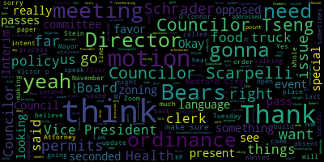
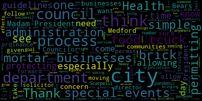
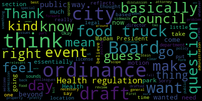
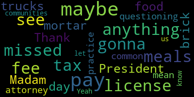

[Morell]: Tuesday, November 14, 2023 at 6 p.m. This meeting is called to order. Mr. Clerk, please call the roll.
[Scarpelli]: I see Councilor Scarpelli.
[Morell]: Yeah, we're having some speaker issues, yeah. Councilor Sanz, present or absent? Present, four present, three absent. The meeting is called to order. There will be a meeting of the Medford City Council Committee of the Whole on Tuesday, November 14th, 2023 at 6 p.m. in the Medford City Council Chambers on the second floor of Medford City Hall and via Zoom. The purpose of this meeting is to discuss proposed food truck ordinance per paper 20-020. The committee has invited Interim Economic Development Director Victor Schrader and Attorney Robert Stein of KP Law to attend this meeting. For further information, aids, and accommodations, contact the city clerk. at 781-393-2425. Sincerely yours, Nicole Morel, Council President. So this is an ordinance that we last visited in February of this year. This is something that has been a policy that was put into place, I believe, in 2016 by then-Mayor Burke, and this whole process has been essentially streamlining that policy and really just bringing it into ordinance form, so there's no questions as far as how these permits are quite forgotten and things like that. At our last meeting we left it and that we wanted to pass this on through Interim Director Schrader to get additional feedback from the Board of Health as well as Fire and Police and Engineering, I believe. So we do have Interim Director Schrader here tonight. I'm going to pass things off to him for an update on that process and then we can open it up for discussion with counselors but also vice president Bears. There's like a reverberating sound. Can you guys hear us on Zoom? Give me a thumbs up. Yes. Okay. They can hear us. All right. So I think I'll pass it over to Victor Schrader.
[Schrader]: Good evening, everyone. Thank you, President Morell. After our last committee of the whole meeting on this topic. We have reviewed it with other departments and in the city, and we have a director of the health department Marianne O'Connor here. She's going to be an important part of rolling this out. Once we, we have it. in order to inform. So we also asked Robin Stein of KP Law to review the latest draft. And she has some suggestions related to structure and mechanics that we felt were important to share with you for consideration. No surprise after the pandemic, there are many communities that are considering food truck ordinances. And there's some best practices that are kind of rising to the top and KP law has been working with many of these communities. So we felt that they had some great ideas that we should consider. And so we wanted to bring them to you. I have the draft ordinance in PDF form that I'm happy to share if that'd be helpful. Just let me know and I'll share screen. And with that, I'll turn it over to Robin Stein from KP law to walk us through.
[Stein]: Good evening, everyone. Thank you for having us tonight. As Victor said, we've been looking at the ordinance and did want to talk, I think more generally without really getting necessarily into the specific sections of the ordinance about the approach that the city is taking for this regulation and to just talk through kind of our recommendations for how the different components of food trucks will be regulated by the city. And then we can come back to you with more specific draft in the future. And so our recommendation for this is somewhat rooted in general law chapter 111, section 31, which is the existing statute that allows the Board of Health to adopt regulations for public health. So what we would expect to see for something like food trucks is that the board of health acting under that statute and consistent with 105 CMR 590, which is the food restaurant sanitary code would be able as a board of health. to put a regulation in place for food trucks to obtain permits to operate in the city and for the operational components of the food truck. So the food safety, you know, inspections, hoods, heating, all of that kind of stuff. The how the food trucks operate part would be accomplished through a regulation by the Board of Health under the existing Board of Health statute and sanitary code. But there's another component of food trucks, which is kind of the land use component. Where do they go in the city? Where do they have a right to be? And that implicates both the council as far as public ways, and it would implicate zoning when it comes to anything that's not a public street. And then for municipal property, it may implicate other municipal departments as well. And so what we are hoping to be able to discuss with you tonight are some of those components so that we can have a better understanding from a policy perspective and help draft this in a way that suits the council's goals are those components. So for example, I would anticipate that if somebody wanted to operate a food truck in the city, They would need both a permit from the board of health, which is required by the regulation. You can't operate without a permit and you need 1 from each of the communities that you're going to operate in. And also that you need the permission to place that food truck. So if somebody wanted to put the food truck in a public way, it would be up to the council to grant that permission. And so, for example, if you look in your current ordinances, section 74.2, it already talks about the uses of streets. And I believe there's a reference in there that prohibits anybody from placing a cart for the sale of fruits. in the street without the council's permission. I think it would make sense to amend and update that section of the city's ordinances to talk about the fact that no one can put a food truck generally on a city street without the council's permission. And then we can work with the council either through amending that section of the ordinances or regulations promulgated under that section to then put in place the guidelines by which the council would give somebody permission to actually have a food truck on a city street, if you're inclined to allow that. And as far as private property or even municipal property that's not a street goes, that would be governed by your zoning bylaw. It's a land use issue. Currently, the only place that food trucks are referenced in the city zoning ordinance is in the definition of breweries in section 94.12. And it talks about the fact that a brewery can have a food truck on site. Um, you know, my reading of that is it's more referencing a permanent food truck. You might have a brewery that doesn't serve food, doesn't have a kitchen, but they have one or more food trucks that's regularly on their property. I could conceive from a land use perspective that there may be a food truck that would come to town. accessory to an existing, say, exempt or municipal use for an event or a festival or something that might need a one day or weekend type permit from the Board of Health, but isn't going to be there permanently. If the city was interested in expanding the land use provisions for food trucks, then we could look at amending the zoning ordinance. And so those are some of the concepts and the areas that we were hoping to get direction from the council tonight. You know, generally speaking, how do you envision the food truck program working? You know, where do you want to see food trucks? you know, the way the ordinance that I saw is currently drafted, it really only accounts for one day and, you know, kind of short term permits. Do you want to account for the ability to have longer term permits, some of those policy decisions, and then we can help work those into both a recommended regulation for the board of health, as well as potential ordinance and or regulation for the city council when it comes to streets. So that's kind of like high level, I know where we are happy to answer any questions, discuss any component of it. And then, um, with the feedback we get from you, we can work that into an updated document and come back.
[Morell]: Thank you. We'll go by some bears.
[Bears]: Thank you, madam president. Thank you, attorney Stein. I just think to me, I feel like we've answered a lot of these questions already. And we, we came up with this ordinance. Basically, to me, the goal of this ordinance is to say in the city right now, we feel comfortable allowing one day licenses and special event licenses. And we don't want that to have to come before the council every time we're being those are being asked for. And I think that's basically the policy we're trying to implement. And then beyond that, I don't think we wanted to make any changes beyond that. But essentially, just to say, food trucks are welcome for events. They're welcome for single day activities. They have to go through the Board of Health to ask for those, and that's essentially the city's policy on food trucks. I don't want to speak for my other colleagues, although I'm seeing some nodding heads. So I think that's essentially the spirit of what we have put forward, and that's what this draft reflects. And I guess my question and feel free to answer after other colleagues have spoken, is just how do we take what we have drafted here, which I think we all believe reflected that general consensus, and turn that into something that fits the framework that you outlined where some of that, basically what I'm hearing is some of what's in this ordinance should be in the Board of Health Regulation. I don't really have a problem with that, but that's basically my understanding of the scope, and I personally didn't want to go beyond the scope of that general kind of those boundaries. So I'll leave it there. Thank you.
[Morell]: Thank you.
[Scarpelli]: Thank you, Madam President. Thank you, Council. I think that's what my sentiments were. I think that the biggest concern we had when this came in front of this body is that, especially at the time during the pandemic, we were seeing the effects, the negative effects with what was happening in our country affecting our brick and mortar businesses. And as we continue to work out of the pandemic, and here we are, we're finally safe, hopefully, We're seeing businesses thriving, especially in the square. I think the number one goal is not to allow the food trucks other than what we stipulated in the guidelines that Council Bears expressed that it was for special events. I think that, but the concern was that there are special events that come up and sometimes the council won't meet and it leaves organizations in limbo. So it's giving the right to city administration and the Board of Health to give that permission and take it off the City Council plate for those purposes. We don't want anybody to miss out on an opportunity, but at the same time, my number one goal from the beginning was protecting our brick and mortar businesses, especially in the climate that we're in right now here in Medford, where What we have, we need to keep and what we need to grow on the brick and mortar businesses. If we're bringing in food trucks from outside the city and allowing these organizations to roll up, we're going to really taint what we're looking for, and especially most of our squares and and bringing more solid businesses to the city of Medford. So I agree with Councilor Bears. I think we agreed on a good plan. for their purposes of making sure that no one is left behind, but at the same time, still protecting the brick and mortar businesses and not allowing the full-time or a specialized area that some communities do have that maybe their businesses thrive. Until I see our brick and mortar businesses thriving and people rushing to come to Medford and opening restaurants, I would hate to give a a food truck provision to come and go as they may please and take business away from what we need to grow in this community. So thank you, Madam President.
[Morell]: Thank you, Councilor Scarpelli. I think, yeah, just to build on, I don't see any councilors talking at the moment. To build on what Vice Mayor Bears and Councilor Scarpelli said, yeah, I think our intent was very much to just take the policy that was in place, make sure it's streamlined, and make sure it's very explicit in an ordinance, the steps that need to be gone through. and of course deferring to the Board of Health for those approvals because as Councilor Scarpelli said, sometimes these come before us, they might come before us late, someone might realize they need it for an event on Wednesday, we don't need it again until the next week, so I think it's just taking this and moving it to the Board of Health which already sees these permits and just making them the deciding authority on it. So I don't think, or I know, based on past conversations, we weren't looking to go into zoning and all this stuff and multi-day permits, I think, by design. We really wanted to focus on special permits at this time because that's what we felt comfortable about. We added the provision as far as how far away from a brick and mortar. These food trucks need to be parked and things like that, but it really was to simplify it. And Attorney Stein, some of what you said, I absolutely understand where you're coming from, but some of what you said sounds like this is just making it a little bit more involved than was our original intent. So I can kick it back to you. I don't see any other councilors who want to speak at this time if you're able to respond to that.
[Stein]: So I think the biggest issue we probably need to, oh, I'm sorry. I didn't mean to, I thought you were done. Oh, I am, yeah, go ahead. Oh, okay. Sorry, that sounds a little bad. So I didn't mean to be speaking over you. I think the biggest issue that we probably need to address in this and I'm very sympathetic to the fact that you're trying to streamline this is that it would be unusual for the Board of Health to be vested with the authority of deciding the location that a food truck could be in. The city council by ordinance controls your streets in ways. So, I mean, we could certainly look into the possibility of the council delegating who can make that decision. But I do think the board of health deciding where the food truck goes would be unusual. And you may wanna think about, is there, you know, a different, maybe municipal person who could be even responsible for that. The board of health could have theoretically the same concern. Somebody might come in and get the operational license under the code, but they're not necessarily getting from the board of health permission to put the food truck in a particular place. Cause that normally would be a council response authority. So, you know, you may want to think about if it's not the council, who should be making that decision? Sure, Attorney Stein, I have a question for Councilor Scarpelli.
[Scarpelli]: I mean, I know other communities use, I can understand that too, but so leaving the permitting process with the health department to make sure that we follow those guidelines, but taking it away from the council to make sure that it's a more streamlined process. I know other, communities use the communications department that does all the special events for the city, or even the parks and recreations director, and allowing that purview under the guidelines that we've given them, that's pretty simple. I know that if the Board of Health doesn't want to do that because it's out of their purview. That's one thing. But we have other departments in the city that perform permitting processes that, given the guidelines of our ordinance, I think this shouldn't be a heavy lift. You have multiple departments here that we can delegate that. the permanent process to if that's the only issue, I don't see why we can't just put that on the city administration to appoint. the best practice that they follow, because they run road races, they run special events, they do parades, they do walks around City Hall. We don't perform those permits, someone that does that in the city. So I would recommend, Madam President, that this question be given to the administration to pinpoint the department and allow that department to follow through with the permitting process. I think it's very simple. So thank you.
[Stein]: And that will definitely be helpful in helping us to make the recommended changes to the ordinance to have the council identify who's responsible for giving permission for a food truck to be in a public way that may also address some city property, depending on who the custodian of that property is. But the other issue is that. Food trucks largely won't be able to go on private property, which is governed by zoning in the city or even municipal property, unless they're associated with a brewery or they fall within some other use because your zoning ordinance doesn't allow for it. That's fine. That's how it can stay. I just wanted to make sure to raise that issue. The other thing and I completely understand obviously wanted to protect your brick and mortar businesses and the motivation just to have the single day or kind of event permit is whether or not you want to consider. if there's anywhere in the city where you may want longer permits. For example, is there a park or a field or something where, for example, breweries by your zoning are permitted. Just so I can clarify though, the definition of brewery in your zoning bylaw allows for a food truck. If a food truck wants to go there under what you're proposing, will they get multiple one-day licenses? Like, how is it that contemplated to be implemented? Thank you, George.
[Scarpelli]: Let me finish. If I can this, we're making this very difficult. It's one day special permits for special events. That's very simple. It's not special events four days in a row, unless the city that allows a permit if they had, let's say per se, a carnival in the city that lasted two or three days. We're just protecting the long-term permitting process of a food truck anywhere in the city. We've already decided we're against that. We're protecting our brick and mortar businesses. I don't know, this isn't a heavy lift. To me, it's very simple. The permitting process goes to the administration to assign someone to do that process. Health department assigns that. If it's something that we didn't put in the ordinance that says that it has to be in a private, in a public way, then we can adjust that, correct? Other than that, I think it's that simple. We do not want food trucks in a designated area anywhere, at least for now. at least this council does, I'm speaking for myself, but until we have security and growth in our business community, allowing food trucks is only gonna hurt that process. That's my philosophy, so thank you.
[Morell]: Thank you. Councilor Caraviello.
[Caraviello]: Thank you, Madam President. Are these food trucks gonna pay a meals tax like the brick and mortar pay? I didn't see anything in there, maybe I missed it. Are they just gonna pay a license fee for the day? So it's just a license fee, no meals tax? I don't see anything in there, so that's why I'm just questioning that. Maybe the attorney, maybe I missed it.
[Morell]: speak to that as far as others.
[Stein]: I don't think you have anything in your ordinance about that. We can certainly clarify that for you when we get our comments back.
[Caraviello]: I mean, what is common practice in other communities?
[Stein]: I'd have to take a look at that for you. Honestly, I've had the question come up to me directly, but we can certainly take a look at that and we can respond when we send you updated language, how that would work.
[Caraviello]: Yeah, if you could let us know.
[Morell]: Thank you. Vice President Paris.
[Bears]: Thank you, Madam President. Thank you. Turnstein, through you, Madam President. I guess just, I'm just a little confused as to what our next steps are here. It seems like we have a draft that we believe generally reflects the policies that we want to have for a food truck ordinance right now. how much, I guess my question is to you just based on your review of this draft, how much of this needs to be changed or what sections need to be moved out into the Board of Health regulations for us to move forward? Because I'll be honest, I thought we were basically gonna do some light legal review and then approve this ordinance. I didn't think we were going back and diving in really to any major questions at this stage. So I guess just where are we going? you know, to me, I mean, if the question is that we don't feel like the Board of Health should be off, should be picking the location, I mean, I think that the applicants are picking the location and the Board of Health is saying yes or no. And then we have this section nine here, which is all mobile food vendors wishing to sell food from public property, including any public street, sidewalk, playground or park must obtain permission to do so from the city department having jurisdiction over that property. So to me, that makes it pretty clear. If you want it in a park, you have to go to the Parks Commission, or at least the Parks Department. If you want it on a public way, that would probably be the DPW. So I guess I'm just not clear here. It seems to me that the two outstanding things are there's a question over how much of what's currently in this ordinance should instead be part of a Board of Health regulation, and the section should point towards that. I'm guessing that's maybe most of Section 6. And then it sounds like, I don't know if Director O'Connor has an opinion on it, or if you do, Attorney Stein. that some other entity within the city administration should be involved in the siting of the location of these food trucks. But other than that, are there other issues with this current ordinance that I'm missing so far from our discussion?
[Stein]: Well, to summarize, I don't think that the city should be adopting a wholesale ordinance on food trucks, because I think the vast majority of it should be regulated through a board of health regulation. And a lot of what's in here can just be moved over to a board of health regulation, but it needs additional review at a minimum for compliance with state. food sanitary code, which is the local CMR. We do have quite a few questions and clarifications that we can get back over to you, or frankly, we'll just review through the Board of Health if we're going to go in the direction of having the Board of Health do a regulation. As you point out, there is a section here that talks about the use of city property. However, there's no process for obtaining that permission. So one of our comments is you do need a process for somebody to be able to get that permission. Because as I said before, the city council controls the use of the public streets and ways we can make a recommendation for an amendment to section 74 two of the ordinances. Once we have direction from us to who the right person will be to make those decisions to add the language necessary to allow a different city official or department to it allow the placement of the food truck, to grant the location of the food truck. As you point out, there are different custodians of city property. So if it's a public park versus school or some other particular land, an applicant might need to get permission from a different custodian depending on who controls that property for the city. But there needs to be a process for obtaining that, some directions for folks. It doesn't need to be in an ordinance, it can be in a guideline or a regulation. But there is a lot of, in my opinion, there's some details in here that need to be worked out. It's definitely helpful to have the clarification tonight that the focus of this really is on protecting those brick and mortar businesses and we can. review it with an eye to that a lot of the operation of food truck is governed by state law and so it may be that a much more streamlined board of health regulation in conjunction with just some updating to the ordinances as to the use of the streets is all that is necessary. But there is some work to do on this. And so when you ask about next steps, what I envision the next step being would be that we would work with Mary Ann through the Board of Health to get an operational regulation in place. And then we would just make some recommendations for minor amendments to the existing city ordinances to account for the grant of location concerns.
[Bears]: Okay. I have two things. First, on the subject at hand, I think my motion would be to take this draft and put it in whatever form you believe is necessary to best affect its passage. I don't know what to say beyond that. You know, we had we had a draft, we thought we were going down the path that we should be going down best practice. And now we're kind of at the moment where we thought we were pretty much done with this. And now we're being kind of told that the form and legal compliance of what has been drafted is not accurate. So I mean, really, it would just be to me. for council and relevant departments to sit down and take this draft and reformulate it, package it into whatever it needs to be packaged into so that we can pass it. My second question in terms of streetways may go a little bit outside this, but I'm just a little bit surprised. Is it your opinion that whenever the city is hosting any sort of event using the public ways that the city council should give permission for that event to occur?
[Stein]: Well, I will tell you that if you look at article 1, section 74, 2 of your existing city ordinances, it says. No person shall expose in or upon any street, common or. any public or other public place, any table or device of any kind upon which any game of hazard or chance can be played. No person shall play any such game at any such table or device in upon any street, common, or other public place in the city. No person shall place or keep any table, stall, booth, or other item in the street in the city for the sale of fruit or other items without permission of the city council. And so I think that if we're talking about food trucks, you're talking about a table stall booth or other item in the street for the sale of fruit or other items. It falls within 74.2. I think that we could recommend changes to that section that would allow for either the city council or the city council's designee to authorize the placement of food trucks in city streets. I think that's pretty simple change that we can suggest, but you have an existing ordinance that touches on this area. And so when you have one, our recommendation is usually to work within that. We don't want to add something that would be inconsistent. Ultimately, I don't think that you need an extensive ordinance on food trucks, because I think that you have an ability through the sanitary code and the board of health statute to regulate food trucks consistent with state law. The benefit of doing that is it just makes it much easier over time to make amendments and regulations because you can do it through the Board of Health regulatory process. And then if the CMR changes, if state law changes as this evolves, it's a lot easier to update things and be malleable on how you deal with it when you're working the operations through a regulation as opposed to through an ordinance. The ordinance part for me is really the location. is really who has the ability to give permission for somebody to use your streets. And it's the council until you say otherwise.
[Bears]: Got it. Okay. And so just when we were talking earlier about the public way, it's because we feel like food trucks fall into the archaic kind of language that some council passed many years ago around not having like fruit sellers on sidewalks.
[Stein]: Well, it's that specifically, but it's also generally that the city council generally is in control of the city's public streets, the use of those streets.
[Bears]: Okay.
[Stein]: And there are other articles. Oh, go ahead.
[Bears]: No, go ahead. Sorry. I cut you off. My apologies.
[Stein]: That's the general legal default is that the city council will control the streets and ways. There are other aspects of your ordinances that deal with work that's done in the streets and ways, street openings and road improvements and such things where other activities have already been delegated to the director of public works and what have you. But that has more to do with if you needed to open up a street or do work in a street, and that's in 74, 61, 62, 63, things like that. So there's other parts of the city's ordinances that already deal with other parts of public streets, but the ability for a private say company, a food truck to just come and use your roads should be your decision, or at least the decision of whomever you've delegated that to.
[Bears]: Right, no, and that makes sense. And that's certainly what we want this to be. I just was, I was, you know, we often close public ways for events that are city hosted and the city council does not vote on the closing of those public ways. And I just wanted to make sure that those acts were not in conflict with our city ordinances separate from this discussion specifically around food trucks.
[Stein]: It may be different because there are, like I said, aspects in here that empower the DPW to do certain things. I mean, if there was an individual question, we could look at it, but there's other parts in here about how the DPW regulates your public streets as well, but it's all in the ordinances.
[Bears]: All right. Then I would make the motion at this time that legal counsel and the board, the health director, the interim economic development director, and any other relevant parties that the administration sees necessary to be part of this process, essentially take this draft ordinance that we've written and come back to us with their recommendations for amendments to the city ordinances, as well as the draft board of health regulation based on this, based on this document, because that sounds like it'll solve all our problems. I'm not 100% sure, but it sounds like that would address the issues.
[Morell]: I think that'll get you there.
[Scarpelli]: Madam President, if I can. Just as a resolution, I think, can we, I'll be asking this moving forward, that can we also have a report of the billable hours from KP Law to address situations like this to the council? I'm going to be asking that moving forward until we have a city solicitor. This this is a type of ordinance that is done within days in the in city halls all over this Commonwealth with the city solicitor. So, um. nothing personal, I just need to move forward. Moving on, this is gonna be a common cry from Councilor Scarpelli till we see a city solicitor, that we get a report back of how many billable hours it'll take KP Law to address these concerns. Thank you.
[Morell]: Thank you. And I'm gonna go to Director O'Connor, set her hand up.
[Bears]: Do you need me to repeat the motion first? If I could just get Madam President.
[Morell]: Okay. Oops, sorry, Marianne, I just muted you again. I'm just gonna wait for the clerk to get that language, then I'll go right to you.
[Scarpelli]: Mr. President, here's what I've got. Mr. President, the council, the health director, the interim economic development director, any departments, the administration, if necessary, come back.
[Bears]: Sorry, make recommendations to amend the ordinance and to create a board of health regulation that reflects the content of this current draft or the content or intent.
[Morell]: I think just to that point, Vice President Bears, that's kind of similar to what we did with outdoor dining. We had an update to our ordinances, and then we had a number of recommendations and policy things that fell under the building commissioner.
[Bears]: To be finished solid waste as well, that's basically what we did with solid waste.
[Morell]: Is it?
[Bears]: I think so.
[Morell]: Yes, it is.
[Bears]: Yeah.
[Morell]: I do so much, I lose track sometimes.
[Bears]: I know, we're constantly doing things, all these things that we do all the time.
[Morell]: I'm sorry, Director O'Connor, I'm gonna go to you, then I'm gonna have Councilor Sanchez. All right, I'm gonna push unmute, and then I'm gonna not touch anything.
[O'Connor]: Thank you, Council President, I just wanted to make sure that in conversation my only concern is what attorney Stein brought up regarding the breweries. And if in fact they are allowed on the property the breweries property, long term, that will need a process or a permit in addition to the one or two day special event, we will need a special I guess long-term, I don't know what that term is, but if that's what the zoning allows for the breweries, then I'm not sure, you know, what that would look like. That's my only concern.
[Stein]: Thank you. Just a clarifying, in case folks don't know what I'm talking about, the current definition of brewery in your zoning ordinance says that a facility may also provide food that is produced on site. just orders with food trucks that are located on site. And so I question I had in our review of this is, did you want the board of health regulation to include some ability for the board of health to grant those permits when it is a food truck located on site at a brewery, because that is already contemplated by your existing zoning ordinance.
[Morell]: So you're asking if within this language, we want the board of health, some specific language as far as regulating those food trucks, which are ran into the zoning as being allowed on site at breweries. That's the question?
[Stein]: Yes, because again, and I totally understand the motivation of where you're coming from, but all that this draft contemplates is a one day or special event permit. It doesn't contemplate the granting of anything else. You know, do you want, to work something in there that allows for the permitting that would be necessary for a brewery to have an onsite food truck for a longer period of time since zoning contemplates it.
[Morell]: Right, and I think, yeah, I think we're probably, we're looking at two issues now. We're looking at what we were talking about with the special event, and then I think you've raised an issue that we hadn't considered, I don't think, since that was passed. So obviously that's something that needs to be addressed. And then we're also just trying to address the special event permits, so.
[Bears]: Right. I mean, just specifically on this topic, I mean, I would think that if a food truck wanted to come for a day to a brewery and put their truck there, that's one thing. If they wanted to come 180 days or 365 days, That would not be something that we were interested in. I don't think I think it was to me. It would still fall under this kind of concept of the one day or special event permit license. Sorry.
[Morell]: Right. And I think I don't think we want we're not in the business of drafting legislation for specific businesses, but we do have. are one brewery, and I think they've mostly or exclusively been relying on area restaurants. So they haven't asked for a food truck there to my remembering. So they've been open however long now, and that has not been an issue. It doesn't mean that it's not something that could be addressed in our zoning, but I just want to raise that for background. Councilor Tseng.
[Tseng]: On a slightly different topic, but going back to what was mentioned, I know folks here mentioned the meals tax, the local meals tax. In looking at the Massachusetts state government website on meals taxes, it does seem like food trucks are included or local excise taxes on meals are included in what food trucks should be paying. I think that's something that we should confirm. But that's what I read from these documents, from the Massachusetts state government website and the Harvard Law School think tank document on food trucks in the greater Boston area. I would be open to asking for language about that in this ordinance or in the regulations, just to make that clear. Great.
[Morell]: Thank you, Councilor Tseng. Going to Director Schrader.
[Schrader]: Thanks President Morell. To Councilor Tseng's point, that's what I recall. We'll follow up with additional information on that. I had done some research in the past on it and we're kind of more involved in these conversations, but I just don't recall at this point. So we'll get the facts for you.
[Morell]: Thank you.
[Stein]: So we have two motions on the floor. Questions just so I can get a complete draft back to you. So there's a provision in the draft section 12 that talks about the city council being able to issue a special permit to anyone that wants to operate in a manner that's inconsistent with these regulations. So I wouldn't recommend calling him a special permit just because I think it'll be confusing from a zoning perspective. I certainly think the city council could have some kind of oversight or waiver or appeal authority, but you would need a process for that. So I do recommend, you know, just giving some thought to, you know, there should be standards and a process and, you know, how it would come that somebody would seek permission to do something different than what the board of health is going to let them do.
[Morell]: Yeah, I think that's fair point.
[Stein]: And then another question would just be on enforcement, but I think we're going to put that in the board of health for now. And if the council thinks that it needs to move, we can, we can attract that as well. But I think we do need processes in here for those special permits for how somebody acquires the right to use city property. things like that. And then I believe at the beginning of the meeting, there was just a reference to maybe having received comments back from police, fire and building. And if you have, I haven't seen those comments. So if there's any written comments that you want to send to me that aren't already incorporated in the draft, that would be great.
[Schrader]: Robin, they are incorporated in the draft that you have. Excellent.
[Stein]: Excellent. Thank you. Trying to clarify that. Yeah, well, we can work back basically documents. 1 will be a recommendation on regulations and 1 will be a recommendation on ordinance amendments.
[Morell]: Thank you. So we do have 2 motions on the floor. So, 1st, for racism bears, Mr. clerk, if you can read that back and still needs a 2nd.
[Scarpelli]: Vice President Baird.
[Hurtubise]: Vice President Baird has moved that legal counsel, the health director, the interim economic development director, and any departments the administration deems necessary make recommendations to amend the ordinance and to create a Board of Health regulation that reflects the content or intent of this current draft. Great.
[Morell]: Second. The motion of Vice President Behr is seconded by Councilor Scarpelli. All those in favor? Aye. All those opposed? Motion passes. And then we have a motion from Councilor Scarpelli to get the total billable hours that KP Law has worked on this issue, I guess, to date, or do you want it at the end?
[Scarpelli]: At the end.
[Morell]: Okay, at the completion of the ordinance. have to meet again on this. So we will, we'll make sure we get that at the end. So on the motion of Councilor Scarpelli, seconded by Councilor Tseng, all those in favor? All those opposed? Motion passes.
[Bears]: Motion to keep the paper committee and adjourned.
[Morell]: On the motion by Senator Bears to keep the paper committee and adjourned, seconded by Councilor Tseng. All those in favor? All those opposed? Motion passes, meeting adjourned.
[Schrader]: Thank you.
|
total time: 5.52 minutes total words: 1135  |
total time: 6.98 minutes total words: 997  |
total time: 7.51 minutes total words: 1283  |
total time: 0.67 minutes total words: 85  |
|
total time: 0.79 minutes total words: 119 |
|||
{kind=link}
{kind=link}
{kind=link}
{kind=link}
{kind=link}